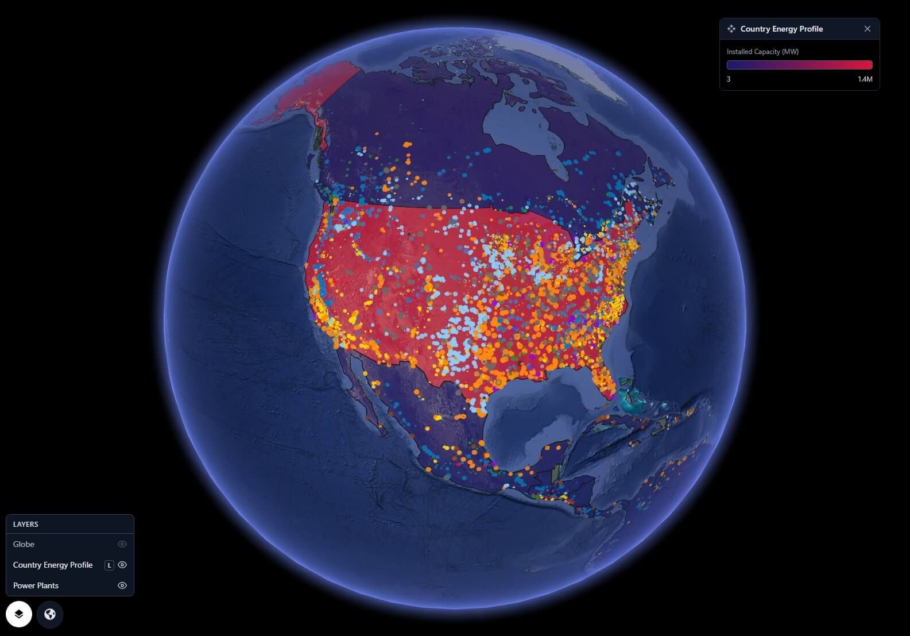
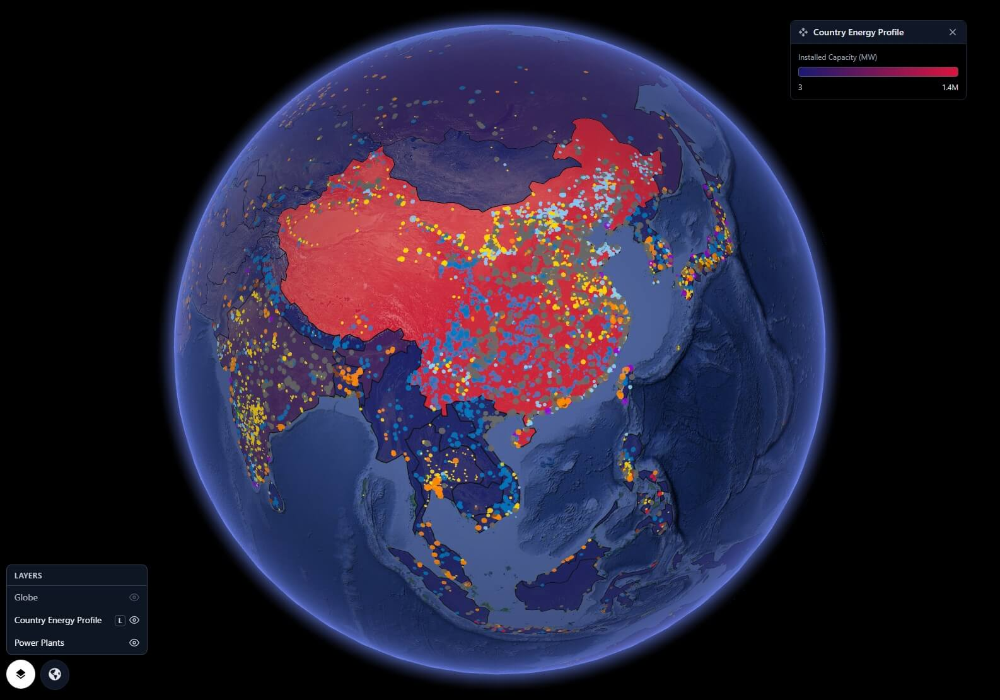
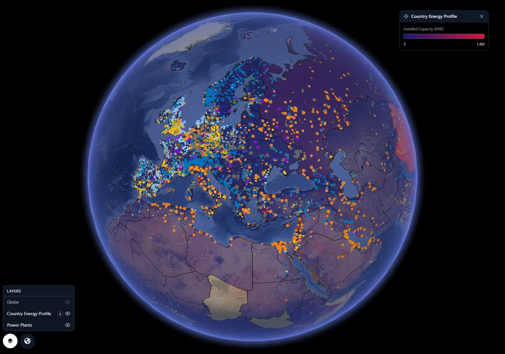
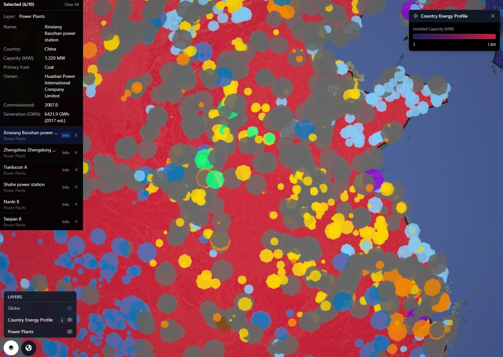

Country Energy Profile & Power Plants on the Globe
Installed capacity choropleth across 167 countries — 3 MW to 1.4M MW — and 35,000 geolocated power plants by fuel type, all on one live 3D globe. Click any country or plant for full energy profile.
GRIP 3D fuses two global energy datasets into a single interactive 3D globe: a Country Energy Profile choropleth showing installed electricity capacity from 3 MW to 1.4 million MW per country, and the WRI Global Power Plant Database — 35,000 geolocated plants colour-coded by fuel type, with dot size proportional to capacity. Click any country to see its full energy profile: total installed capacity, generation by fuel, renewable share, and CO₂ intensity. Click any plant dot for its name, operator, fuel, MW output, and annual generation. Built for energy analysts, investors, utilities, policy teams, and sustainability professionals who need to understand the global power landscape at planetary scale.

Global energy data is locked in national statistics portals, IEA reports, and spreadsheet databases. There is no way to see the full planetary picture — which countries are coal-heavy, where solar is surging, where capacity gaps exist — without building it yourself.
- Country energy data is fragmented across IEA, EIA, IRENA, Ember, and national sources
- Power plant databases exist only as CSV files with no spatial layer
- No single view shows both country-level capacity and plant-level detail
- Energy transition progress is invisible without comparative geographic context
GRIP 3D layers a country-level capacity choropleth over a live plant-level dot map — giving energy professionals both the macro and micro view of global power infrastructure on one interactive globe.
- 167-country choropleth: installed capacity 3 MW → 1.4M MW, purple-to-red scale
- 35,000 power plants as colour-coded dots — fuel type on sight, capacity by dot size
- Click any country for full energy profile: capacity, generation mix, renewable share
- Click any plant for name, operator, fuel, MW, annual generation, and source link
Why this works at global scale
The Two Layers
- Each country filled with a colour representing total installed electricity capacity (MW)
- Scale: deep purple (lowest, ~3 MW) → red-pink → crimson → deep red (highest, 1.4M MW)
- Click any country to open profile panel: total capacity, generation by source, CO₂ intensity, renewable share
- Layer panel legend shows live colour scale from 3 MW to 1.4M MW
- Compare energy superpowers (US, China, India) vs developing nations visually at a glance
- United States — ~1,400,000 MW (highest)
- China — ~1,350,000 MW
- India — ~480,000 MW
- Germany — ~240,000 MW
- Brazil — ~190,000 MW
- Small island nations — ~3–50 MW (lowest)
- Every plant in the WRI Global Power Plant Database plotted as a geo-located dot
- Dot colour = primary fuel type (10 colours, see key)
- Dot size scales with installed capacity (MW) — large plants dominate visually
- Click any dot: plant name, owner/operator, primary fuel, capacity (MW), annual generation (GWh), commissioning year, and data source link
- Filter by fuel type to show only coal, solar, wind, nuclear, hydro etc. on the globe
Country Profile Examples
Click any country on the globe to open its energy profile panel — here's a sample of what's surfaced.
Capabilities
- Country Energy Profile choropleth — 167 countries, installed capacity 3 MW to 1.4M MW
- 35,000+ power plants as geo-located, colour-coded, size-scaled dots by fuel type
- Click-to-profile on any country: capacity, generation mix, renewable share, CO₂ intensity
- Click-to-detail on any plant: name, operator, fuel, MW, annual GWh, commissioning year
- Filter globe by fuel type — show only coal, solar, wind, nuclear, hydro, or any combination
- Layer toggle — view country choropleth, plant dots, or both simultaneously
- Capacity range legend (3 MW → 1.4M MW) displayed live in layer panel on the globe
- APIs for custom plant data ingestion — connect private utility portfolios alongside open data
Data & API Stack
GRIP 3D UC12 is powered by two open, authoritative global energy datasets — the WRI Global Power Plant Database for plant-level detail, and Ember / IRENA for country-level capacity and generation profiles.
datasets.wri.org · CC BY 4.0
| Field | Used for | Detail |
|---|---|---|
latitude, longitude |
Plot plant dot on globe | Geolocated for all 35,000+ plants across 167 countries |
primary_fuel |
Dot colour by fuel type | Coal, Gas, Oil, Nuclear, Hydro, Solar, Wind, Biomass, Geothermal, Waste |
capacity_mw |
Dot size on globe | Installed capacity in MW — sqrt-scaled for visual balance |
name, owner |
Plant detail panel on click | Plant name and operator/owner organisation |
generation_gwh_* |
Annual generation in click panel | Reported or estimated annual generation 2013–2019 (GWh) |
commissioning_year |
Plant age in detail panel | Year plant was commissioned or last major upgrade |
country, country_long |
Country filter layer | ISO 3-letter code and full country name |
CC BY 4.0
| Field | Used for | Detail |
|---|---|---|
installed_capacity_mw |
Country choropleth fill colour | Total installed electricity capacity per country in MW — drives purple-to-red scale |
generation_twh by source |
Energy mix chart in country panel | Annual generation by Coal, Gas, Oil, Nuclear, Hydro, Solar, Wind, Other Renewables (TWh) |
renewables_share_elec |
Renewable % in country panel | Share of electricity from renewables — updated annually for 200+ geographies |
co2_intensity_gco2_per_kwh |
CO₂ intensity in country panel | Carbon intensity of electricity generation in gCO₂ per kWh |
demand_twh |
Electricity demand in country panel | Annual electricity demand in TWh — net imports calculated |
Who Uses This
- Energy & Utilities — Map competitor plant portfolios globally; visualise capacity gaps and renewable penetration by region for strategic planning
- Investment & Finance — Screen energy transition opportunities by country — overlay renewable share, CO₂ intensity, and installed capacity to identify markets ripe for investment
- Government & Policy — Benchmark national energy profiles against regional peers; identify capacity shortfalls and model transition pathways visually
- ESG & Sustainability — Layer CO₂ intensity over supply chain footprints; quantify Scope 2 emissions exposure by grid region
- Energy Analysts & Researchers — 35,000 geolocated plants plus country profiles on one spatial canvas — a reference layer for any energy modelling workflow
- Media & Journalism — Visualise the global energy mix as a story — where coal dominates, where the renewable transition is happening fastest
- Developers & Data Teams — API-ready layer ingestion — connect private utility data, EIA feeds, or proprietary plant databases into the globe
- Executive & Strategy — One globe view replaces a dozen country energy reports — board-ready global energy intelligence
Platform Views



Open for consulting and partner integrations
If you want this use case mapped to your data sources, we can deliver a fast prototype and integration plan — including layers, APIs, and deployment options.